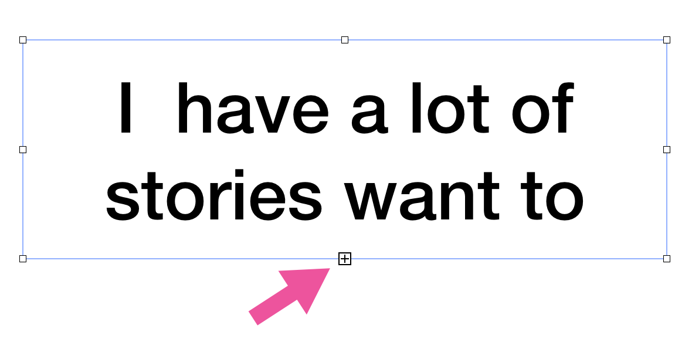
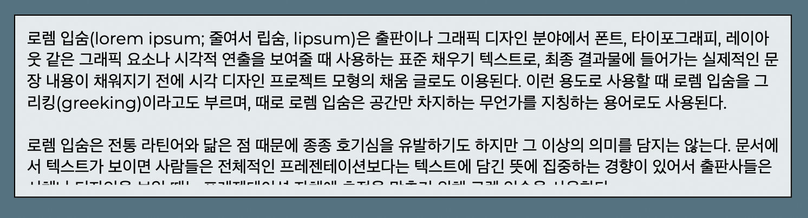

Clipping Indicator
애플 키노트 앱은 개체의 크기보다 많은 문자열이 포함되면, 개체의 아래쪽에 [+] 기호를 표시해 전체 문자열이 화면에 표시되지 않고 있음을 나타내는 기능이 있습니다. 이를 클리핑 표시자(Clipping indicator)라 부르는데, 만들고 있던 웹앱에서도 비슷한 기능을 넣어달라는 요청을 받아 구현해보았습니다.

위 화면에서와 같이 문자열이 다 표시되지 않았다는 것을 사용자가 시각적으로 인지할 …
read more